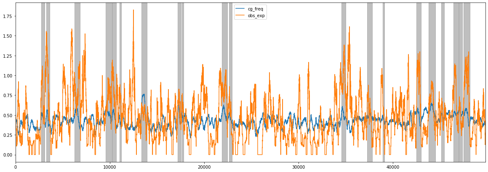

CGI_Finder usage
Simple method to find putative CpG islands in DNA sequences by using a sliding window and merging overlapping windows satisfying the CpG island definition. Results can be saved in bed and tsv format.
Example usage
Input file
Reference FASTA file
FASTA reference file containing sequences in which CpG islands needs to be found.
Output files
Tabulated TSV file
This tabulated file contains the following fields for each CpG island found:
- chromosome / start / end : Genomic coordinates
- length: Length of the interval
- num_CpG: Number of CpGs found
- CG_freq: G+C nucleotide frequency
- obs_exp_freq: Observed versus expected CpG frequency
BED file
Minimal standard genomic BED3 format listing the coordinates of putative CpG islands.
The picture below shows the putative CpG islands found (grey boxes) in an example sequence, overlaid with C+G frequency and observed/expected CpG frequency
